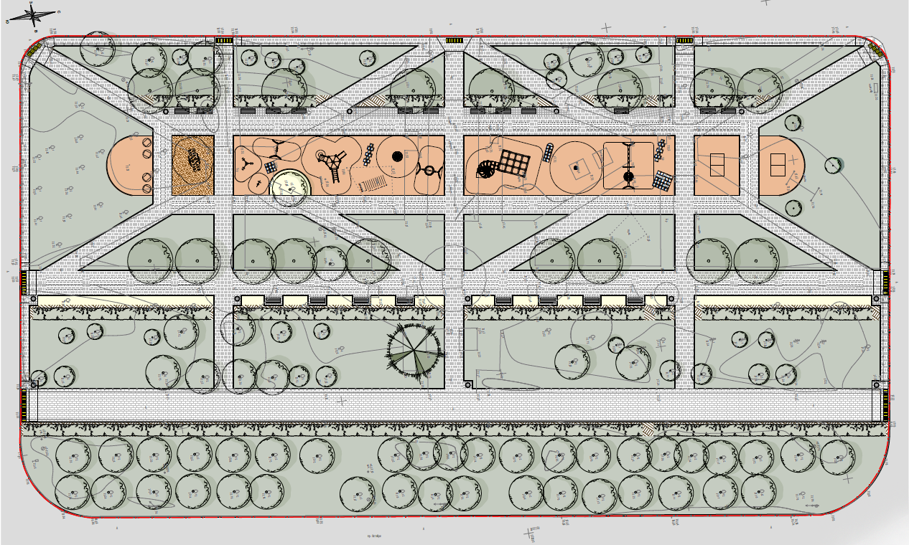

Ландшафтная архитектура

Архитектурная мастерская "Элимак" - компания, специализирующаяся на выполнении работ по комплексному благоустройству и ландшафтному дизайну от проекта до реализации "под ключ".
Нашей главной особенностью является активное использование в работе природного камня- гранита, мрамора, травертина и других пород.